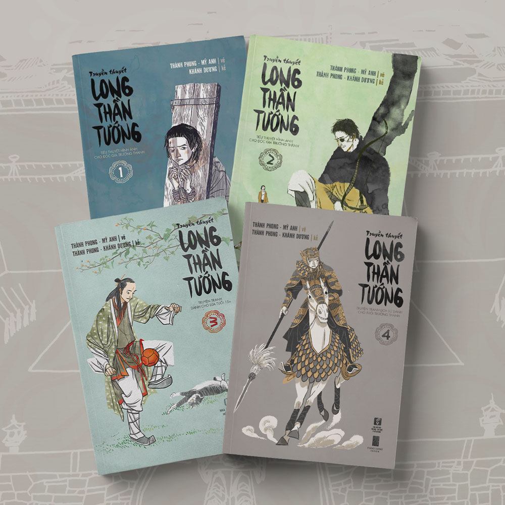
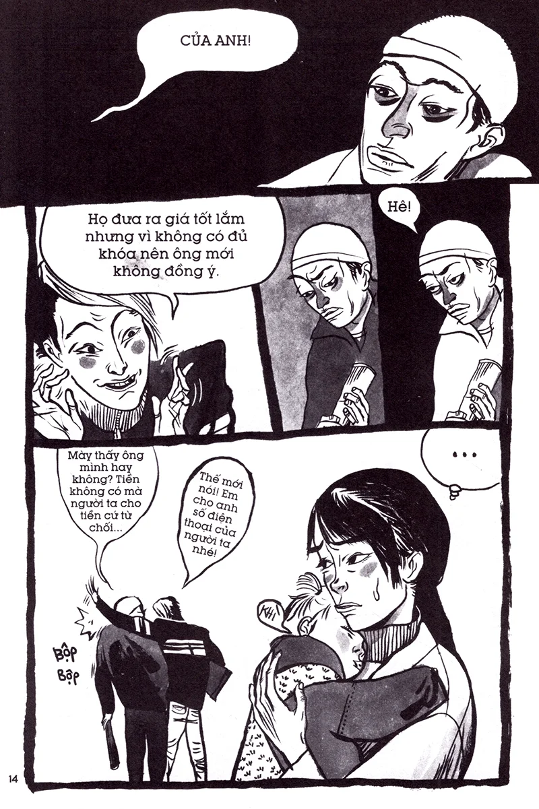

Đọc truyện tranh lịch sử, chúng ta thường chú ý đến những trận đánh, lời thoại của nhân vật hay các bước ngoặt lớn. Nhưng hãy thử nhìn kỹ hơn: ai đang đứng ở vị trí trung tâm, ai bị đẩy ra rìa khung hình, nhân vật nào xuất hiện trong bóng tối và khoảng cách giữa họ nói lên điều gì? Với Long Thần Tướng, READIE gợi ý một cách đọc truyện tranh bằng mắt: tìm những thông tin mà hình ảnh có thể truyền tải ngay cả khi nhân vật chưa nói thành lời.

Vị trí trong khung hình không phải lúc nào cũng ngẫu nhiên
Khi đọc một cảnh có nhiều nhân vật, đừng chỉ nhìn người đang nói. Hãy quan sát toàn bộ khung tranh.
Ai đứng ở trung tâm? Ai ở phía sau? Nhân vật nào chiếm nhiều diện tích nhất, và ai chỉ xuất hiện một phần trong khung hình?

Những lựa chọn này có thể hướng sự chú ý của người đọc đến một nhân vật, làm nổi bật khoảng cách giữa các bên hoặc tạo cảm giác một người đang bị cô lập. Tuy nhiên, vị trí hình ảnh không tự nó chứng minh quyền lực hay động cơ. Muốn hiểu đúng, cần đối chiếu với diễn biến và phản ứng trong những khung tranh tiếp theo.
Mẹo soi hint: Hãy thử che phần lời thoại và đọc riêng chuỗi hình ảnh. Bạn có nhận ra ai đang chiếm ưu thế, ai đang dè chừng hoặc mối quan hệ nào đang căng thẳng không?
Trang phục và vật dụng có thể gợi mở điều gì?
Trong truyện tranh lịch sử, trang phục, vũ khí, đồ dùng và kiến trúc góp phần tạo nên bối cảnh. Chúng cũng có thể giúp phân biệt nhân vật, địa vị hoặc môi trường sống.
Một vật dụng xuất hiện nhiều lần đáng để người đọc ghi chú, đặc biệt nếu nó gắn với một nhân vật hoặc một sự kiện quan trọng. Nhưng cần tránh suy luận quá xa: một món đồ xuất hiện lặp lại chưa chắc là biểu tượng bí mật; đôi khi nó chỉ là vật dụng cần thiết cho diễn biến.
Cách kiểm tra tốt nhất là xem vật đó xuất hiện trong hoàn cảnh nào, có được nhấn mạnh bằng bố cục hay lời thoại không và vai trò của nó có thay đổi theo thời gian không.
Khoảng lặng cũng là một loại thông tin
Không phải cảnh nào cũng cần lời giải thích. Một nhân vật im lặng sau khi nghe tin, tránh nhìn vào người đối diện hoặc xuất hiện trong một khung hình tách biệt có thể khiến người đọc đặt câu hỏi về cảm xúc của họ.
Nhưng hãy phân biệt điều nhìn thấy với điều suy đoán. “Nhân vật không trả lời” là một quan sát. “Nhân vật đang che giấu bí mật” là một giả thuyết cần thêm bằng chứng.
Khi đọc lại, hãy tìm những hành động xảy ra ngay trước và sau khoảng lặng đó. Nếu cùng một kiểu phản ứng xuất hiện nhiều lần trong những tình huống tương tự, giả thuyết của bạn sẽ có cơ sở hơn.

Truyện tranh lịch sử không phải sách sử minh họa
Một chi tiết trong truyện có thể dựa trên sử liệu, nhưng cũng có thể là lựa chọn nghệ thuật hoặc hư cấu của tác giả. Vì vậy, khi phát hiện một yếu tố lạ, hãy tách hai câu hỏi: “Tác giả đang kể điều gì?” và “Có tài liệu lịch sử nào xác nhận điều này không?”.
Đây là cách vừa thưởng thức tác phẩm vừa mở rộng kiến thức mà không đánh đồng hư cấu với sự kiện lịch sử.